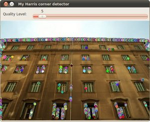

Creating yor own corner detector¶
Goal¶
In this tutorial you will learn how to:
- Use the OpenCV function cornerEigenValsAndVecs to find the eigenvalues and eigenvectors to determine if a pixel is a corner.
- Use the OpenCV function cornerMinEigenVal to find the minimum eigenvalues for corner detection.
- To implement our own version of the Harris detector as well as the Shi-Tomasi detector, by using the two functions above.
Theory¶
Code¶
This tutorial code’s is shown lines below. You can also download it from here
/**
* @function cornerDetector_Demo.cpp
* @brief Demo code for detecting corners using OpenCV built-in functions
* @author OpenCV team
*/
#include "opencv2/highgui/highgui.hpp"
#include "opencv2/imgproc/imgproc.hpp"
#include <iostream>
#include <stdio.h>
#include <stdlib.h>
using namespace cv;
using namespace std;
/// Global variables
Mat src, src_gray;
Mat myHarris_dst; Mat myHarris_copy; Mat Mc;
Mat myShiTomasi_dst; Mat myShiTomasi_copy;
int myShiTomasi_qualityLevel = 50;
int myHarris_qualityLevel = 50;
int max_qualityLevel = 100;
double myHarris_minVal; double myHarris_maxVal;
double myShiTomasi_minVal; double myShiTomasi_maxVal;
RNG rng(12345);
const char* myHarris_window = "My Harris corner detector";
const char* myShiTomasi_window = "My Shi Tomasi corner detector";
/// Function headers
void myShiTomasi_function( int, void* );
void myHarris_function( int, void* );
/**
* @function main
*/
int main( int, char** argv )
{
/// Load source image and convert it to gray
src = imread( argv[1], 1 );
cvtColor( src, src_gray, COLOR_BGR2GRAY );
/// Set some parameters
int blockSize = 3; int apertureSize = 3;
/// My Harris matrix -- Using cornerEigenValsAndVecs
myHarris_dst = Mat::zeros( src_gray.size(), CV_32FC(6) );
Mc = Mat::zeros( src_gray.size(), CV_32FC1 );
cornerEigenValsAndVecs( src_gray, myHarris_dst, blockSize, apertureSize, BORDER_DEFAULT );
/* calculate Mc */
for( int j = 0; j < src_gray.rows; j++ )
{ for( int i = 0; i < src_gray.cols; i++ )
{
float lambda_1 = myHarris_dst.at<Vec6f>(j, i)[0];
float lambda_2 = myHarris_dst.at<Vec6f>(j, i)[1];
Mc.at<float>(j,i) = lambda_1*lambda_2 - 0.04f*pow( ( lambda_1 + lambda_2 ), 2 );
}
}
minMaxLoc( Mc, &myHarris_minVal, &myHarris_maxVal, 0, 0, Mat() );
/* Create Window and Trackbar */
namedWindow( myHarris_window, WINDOW_AUTOSIZE );
createTrackbar( " Quality Level:", myHarris_window, &myHarris_qualityLevel, max_qualityLevel, myHarris_function );
myHarris_function( 0, 0 );
/// My Shi-Tomasi -- Using cornerMinEigenVal
myShiTomasi_dst = Mat::zeros( src_gray.size(), CV_32FC1 );
cornerMinEigenVal( src_gray, myShiTomasi_dst, blockSize, apertureSize, BORDER_DEFAULT );
minMaxLoc( myShiTomasi_dst, &myShiTomasi_minVal, &myShiTomasi_maxVal, 0, 0, Mat() );
/* Create Window and Trackbar */
namedWindow( myShiTomasi_window, WINDOW_AUTOSIZE );
createTrackbar( " Quality Level:", myShiTomasi_window, &myShiTomasi_qualityLevel, max_qualityLevel, myShiTomasi_function );
myShiTomasi_function( 0, 0 );
waitKey(0);
return(0);
}
/**
* @function myShiTomasi_function
*/
void myShiTomasi_function( int, void* )
{
myShiTomasi_copy = src.clone();
if( myShiTomasi_qualityLevel < 1 ) { myShiTomasi_qualityLevel = 1; }
for( int j = 0; j < src_gray.rows; j++ )
{ for( int i = 0; i < src_gray.cols; i++ )
{
if( myShiTomasi_dst.at<float>(j,i) > myShiTomasi_minVal + ( myShiTomasi_maxVal - myShiTomasi_minVal )*myShiTomasi_qualityLevel/max_qualityLevel )
{ circle( myShiTomasi_copy, Point(i,j), 4, Scalar( rng.uniform(0,255), rng.uniform(0,255), rng.uniform(0,255) ), -1, 8, 0 ); }
}
}
imshow( myShiTomasi_window, myShiTomasi_copy );
}
/**
* @function myHarris_function
*/
void myHarris_function( int, void* )
{
myHarris_copy = src.clone();
if( myHarris_qualityLevel < 1 ) { myHarris_qualityLevel = 1; }
for( int j = 0; j < src_gray.rows; j++ )
{ for( int i = 0; i < src_gray.cols; i++ )
{
if( Mc.at<float>(j,i) > myHarris_minVal + ( myHarris_maxVal - myHarris_minVal )*myHarris_qualityLevel/max_qualityLevel )
{ circle( myHarris_copy, Point(i,j), 4, Scalar( rng.uniform(0,255), rng.uniform(0,255), rng.uniform(0,255) ), -1, 8, 0 ); }
}
}
imshow( myHarris_window, myHarris_copy );
}
Explanation¶
Result¶

Help and Feedback
You did not find what you were looking for?- Ask a question on the Q&A forum.
- If you think something is missing or wrong in the documentation, please file a bug report.